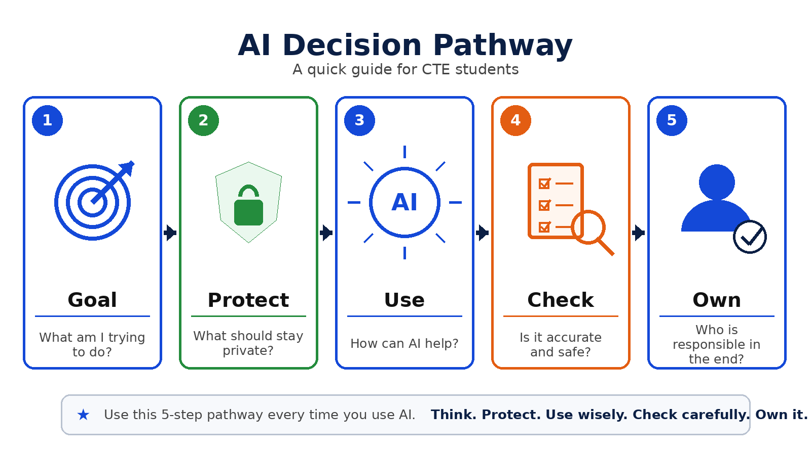

Check 1
Which statement best explains artificial intelligence?
AI systems are designed by people to recognize patterns, make predictions, recommend options, or create content.
Lesson 1
Step 1.1 · Start here
AI systems do not choose their own goals. People decide what problem the system should help solve, what information it may use, how it will be tested, and where it may be used.
In this lesson, you will look at the people behind AI. You will compare four common model types and study the choices people make when they build and use AI.
Big Question: How do people's choices shape what AI can do, what it produces, and how the result is used?
Main Rule: AI can sort, predict, suggest, or create. People still set the goal, check the limits, and own the final decision.
Use this pathway whenever AI may support a task.
👀 Your next move: Study the pathway below. Notice that people set the goal, protect information, check the result, and own the final decision.

By the end of this lesson, you can:
| Lesson Step | Time |
|---|---|
| 1.2 Who Is Really Making the Decisions? | 9 minutes |
| 1.3 The People Behind an AI System | 8 minutes |
| 1.4 Different AI Systems, Different Limits | 7 minutes |
| 1.5 Human Decisions Map Simulation | 14 minutes |
| 1.6 Lesson Assessment | 12 minutes |
| Total | 50 minutes |
Acknowledgment: This lesson was informed by Michigan Virtual AI literacy resources and adapted by the Genesee Career Institute team.
Source Foundation:
Step 1.2 · Learn and check
A vehicle-diagnostic system flags a possible transmission problem. The technician inspects the vehicle and finds that a damaged wheel-speed sensor caused the unusual data.
Pause and think: What did the AI system do? What choices did people make before the system was built? What must the technician decide now?
▶️ Your next move: Watch for how generative AI uses patterns to create new content.
📖 Your next move: Read the short excerpt below. Look for the decisions people make before an AI system ever produces an answer.
AI is a broad group of computer systems built to do specific tasks. AI can find patterns, sort information, make predictions, suggest choices, or create content. It may be part of software, machines, vehicles, medical tools, games, or workplace systems.
AI does not choose its own purpose. People decide what problem it should help solve, what data it may use, and how its output will be used. These choices affect who benefits, what could go wrong, and who is responsible for the final decision.
Key takeaway: AI performs a designed task. A person must decide whether the result fits the real situation and what action should follow.
Which statement best explains artificial intelligence?
AI systems are designed by people to recognize patterns, make predictions, recommend options, or create content.
Put these five steps in the order they should usually happen when people build and use an AI system.
Choose the steps in order, from first to last.
People should first define the problem and the goal. Next, they prepare the data, test the results, and improve the system over time.
A vehicle-diagnostic system flags a possible transmission problem. What should the technician do next?
The system may flag a pattern, but a qualified technician must inspect the evidence and make the final diagnosis.
Step 1.3 · Learn and check
▶️ Your next move: Watch for one way people help train a generative AI model.
📖 Your next move: Read the six stages below. At each stage, ask what could improve the system and what could introduce a problem.
People decide what problem the system should help solve and whether AI is the right tool.
People select examples, organize information, create categories, and decide what the data means.
People select the features, rules, tools, and model type that fit the goal.
People decide what a useful, accurate, fair, and safe result should look like.
People compare results with evidence, look for mistakes or uneven outcomes, and make changes.
People decide where the system may be used, who may rely on it, what checks are required, and when it should be changed or stopped.
Data matters because AI learns patterns from the examples people provide. Results may be weaker when data is missing, wrong, unreliable, private, or does not include the situations the system will face.
👀 Your next move: Study the diagram below. Follow the process from training examples to model refinement, and notice where human choices shape the result.

Key takeaway: AI development is not an automatic process. People shape the purpose, data, model, tests, safeguards, and final use.
Which action is an example of human data curation?
Data curation means choosing, preparing, labeling, and checking the examples used to train a system.
Which measures should a workplace team define before approving an AI system? Select all that apply.
Useful success measures address accuracy, fairness, safety, and usefulness for the intended task.
What is a likely effect of missing or unrepresentative training data?
Missing or unrepresentative data can weaken performance in situations or groups the training data does not reflect.
Step 1.4 · Learn and check
▶️ Your next move: Watch for one example of a task that people designed AI to do.
This video may display YouTube ads.
📖 Your next move: Read the model cards below. Compare each model’s purpose, workplace use, strength, and limitation.
Purpose: Puts an input into a group.
Workplace example: Labels an equipment image as normal, damaged, or unclear.
Strength: Uses the same learned groups quickly.
Limit: Results depend on the examples and labels people chose.
Purpose: Estimates something unknown or in the future.
Workplace example: Estimates the chance that a machine part may fail.
Strength: Finds patterns in many records or measurements.
Limit: A prediction is not a fact. It may be wrong when data is missing or conditions change.
Purpose: Ranks or suggests choices.
Workplace example: Suggests training resources, products, repair steps, or menu ideas.
Strength: Helps narrow a large set of choices.
Limit: Suggestions may be based on old data, popularity, or goals that do not fit the person.
Purpose: Makes new digital content from patterns and user directions.
Workplace example: Drafts a handout, design idea, code sample, or project outline.
Strength: Makes drafts and options quickly.
Limit: A result may look good but still be wrong, unsafe, copied, or incomplete.
Professional check: One tool may use more than one model type. Ask what job it was built to do, what facts support the result, and what a person must still decide.
Match each AI model type with the task it mainly performs.
Each model type is named for its main task: classify, predict, recommend, or generate.
Sort each workplace task into the AI model type that best describes it.
The tasks align with the models’ main purposes: sorting, estimating, ranking, and creating.
Which statements describe real limitations of generative AI? Select all that apply.
Generative AI can produce polished content that is inaccurate, incomplete, unsafe, or inappropriate.
Step 1.5 · Practical application
Your role: AI Trade Consultant
Review six short workplace cases. Decide how AI should help while a trained person stays in control.
🗺️ Your next move: Read the Human Decisions Map. Use it while you work through the six cases.
What job should the AI help with?
What goals, data, labels, or rules did people choose?
Is it sorting, predicting, suggesting, or creating? What could it miss?
What must a trained person inspect or decide?
What choice could make the result safer or more useful?
Should this task use AI, another tool, or both?
Agriscience - Veterinary Medicine
Health Science - Medical Careers
Forensic Science
Automotive - Medium/Heavy Diesel
Aviation
Mechatronics
Construction Trades
Welding
Computer Science
Marketing - Graphic Design
Education
Public Safety
U.S. Army JROTC
Cosmetology
Culinary
How this works: You will complete six workplace cases, one from each career category. Choose the response that keeps trained people involved in checking evidence and making final decisions. You may retry a case after reading the feedback. This is a practice activity and does not need to be submitted.
✅ Your next move: Start the simulation. Choose the answer that keeps human judgment and job responsibility in the process.
Interactive simulation
Case 1 of 6
One workplace case is selected from each career category. Use the Human Decisions Map to choose the response that keeps trained people responsible.
Career category 1 of 6 · Care and evidence
Forensic Science
An AI tool compares two fictional evidence logs and says their time entries match. A student sees that the logs use different time zones.
What should happen before anyone treats the entries as a match?
Why: Time zones can change what the records mean. A trained person must check the original evidence before making a finding.
Career category 1 of 6 · Care and evidence
Health Science - Medical Careers
An AI tool sorts fictional patient messages as routine, urgent, or unclear. It marks one message as routine. A medical assistant notices that the person also reports chest pain.
What should happen next?
Why: The AI missed an important detail. A qualified health professional must review the full message and make the care decision.
Career category 1 of 6 · Care and evidence
Agriscience - Veterinary Medicine
An AI tool looks at a photo of a dog's skin and labels it a minor rash. The dog is also not eating, but the tool did not get that information.
What should the veterinary worker do next?
Why: The AI did not have all the facts. A qualified veterinary professional must review the full situation and decide what care is needed.
Career category 2 of 6 · Transportation and equipment
Mechatronics
An AI tool predicts that a factory motor will fail soon. The sensor was replaced yesterday, but the system still uses readings from the old sensor.
What should the technician do?
Why: Old sensor data may not fit the current machine. The technician must check the data and the motor before deciding what to do.
Career category 2 of 6 · Transportation and equipment
Aviation
An AI tool reviews an aircraft's maintenance records and says it is ready to use. A technician sees that the newest inspection notes are missing.
What should happen next?
Why: The AI used incomplete records. A qualified person must review the missing notes and decide whether the aircraft is ready.
Career category 2 of 6 · Transportation and equipment
Automotive - Medium/Heavy Diesel
An AI tool ranks possible causes of a truck's power loss. It lists the fuel pump first. A technician finds a loose sensor wire.
What should the technician do?
Why: The AI can rank possible causes, but it cannot inspect the truck. The technician must test the system and approve the repair.
Career category 3 of 6 · Skilled trades
Welding
An AI tool creates a welding plan from a drawing. The drawing does not list the metal thickness.
What should the welder do before using the plan?
Why: The missing metal thickness can change the welding plan. A qualified person must confirm the details and check the plan.
Career category 3 of 6 · Skilled trades
Construction Trades
An AI tool predicts that a project can start Monday. It used old weather data and did not check the current worksite.
What should the project lead do?
Why: The prediction is based on old and incomplete information. The project lead must check current site conditions and make the final plan.
Career category 4 of 6 · Digital and design
Marketing - Graphic Design
An AI tool makes a logo for a fictional client. The logo looks very close to a famous brand.
What should the designer do?
Why: The first draft may create ownership or brand problems. The designer must check it and make the final work original.
Career category 4 of 6 · Digital and design
Computer Science
An AI tool writes code for a login page. The code runs, but no one has tested how it protects passwords.
What should the developer do next?
Why: Working code is not always safe code. A developer must test security, review the code, and approve it before use.
Career category 5 of 6 · Education and public service
U.S. Army JROTC
An AI tool ranks fictional cadets for a leadership role. It uses attendance and fitness scores but leaves out teamwork and conduct.
What should the instructor do?
Why: The ranking leaves out important parts of leadership. The instructor must review the full criteria and make the final choice.
Career category 5 of 6 · Education and public service
Public Safety
An AI tool ranks fictional emergency calls. It puts one call low because the message is short. A dispatcher hears signs of danger in the audio.
What should happen next?
Why: The short message did not show all the facts. The dispatcher must use training, policy, and the full evidence to make the response decision.
Career category 5 of 6 · Education and public service
Education
An AI tool suggests reading groups for a fictional class. It uses one quiz score and leaves out the students’ recent work.
What should the teacher do?
Why: One score does not show the full picture. The teacher must review more evidence and decide how to support each student.
Career category 6 of 6 · Hospitality and personal services
Culinary
An AI tool suggests a menu for a fictional event. It misses a guest's nut allergy because the allergy was entered in a separate note.
What should the culinary worker do?
Why: The AI missed important safety information. A culinary worker must check all allergy notes and approve the final menu.
Career category 6 of 6 · Hospitality and personal services
Cosmetology
An AI tool suggests a hair service from a fictional client form. It does not include the client's allergy note.
What should the cosmetologist do?
Why: The allergy note may affect safety. The cosmetologist must review the full information and make the service decision.
Step 1.6 · Lesson assessment
Your place in this lesson is saved automatically on this device.